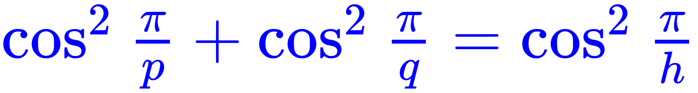

任何带有单位元的赋范可除代数同构于以下四个代数之一：ℝ、ℂ、ℍ和𝕆，分别代表实数、复数、四元数和八元数。
大家好，我是学渣「孤苦伶仃可怜废柴草根文盲矬胖老穷光棍汉」。箪食瓢饮日理万机的一周过去了，总体来说本周恶补进度正常，还能于百忙之中抽出宝贵的时间关注全球革命形势和意识形态领域的斗争实践。
微积分进度比想像的要快，已经看完「准备知识」「分析基础」和「导数」了，顺便找到俩排版错误，接下来就到了「一元积分」部分。而几何与代数的进度都比预计的要慢，甚至慢很多。几何只看完了第一章「向量代数」，代数更是只看完了第一章第一节「若干准备知识」。
总结进度参差不齐的原因，就是「老迈年高」导致「思想僵化」，已经适应了「高观点」之后回头再看「初等数学」有些不习惯。并且由于曾经倒背如流的「中学数学常识」已经被时间所冲淡，于是面对针对「新生」知识结构所安排的教学内容，明显的感受到「代沟」的存在。
微积分教材没习题，而「配套资料」的章节目录和内容安排都与教材不一致，没法「同步练习」，等「复习」的时候再说。而几何与代数都是随着教材进度做题。几何开头的向量运算部分，由于学渣我目前处于「二十年目睹之怪现状」与二十多年前的「无忧无虑的童年」交相辉映的混合纠缠态，看着这些题，「似曾相识」的感觉带来的只有干扰。
比方说几何第一章第一节习题中前面18道磕磕绊绊都刷出来了，但是19题卡住了，卡了半天之后发现从这道题直到最后的23题，都是「塞瓦定理」和「梅涅劳斯定理」的向量证法相关部分。感觉用平面几何也能做出来，但不符合课程要求，在似曾相识但似是而非的纠结当中，终于想起来原来是二十多年前刷过的题。而这俩「定理」的名字我现在才知道，也是上网一搜才发现，当代中学数学已经直接写进课本青史留名了也。
代数的情况好点，习题都做出来了，卡住的一道，是证明正有理数集与正偶数集存在一一对应。卡住的原因倒是与中学数学无关，而是我一直纠结于写出解析表达式，忘了康托对角线证明法所列表格当中那些跳过的空洞，依赖于「素数分布」的数论结果。既然「解析」不出来，那就「显然」过去吧。哎，一旦拉下脸来「显然」，面前豁然开朗。
微积分开头极限部分，需要的「中学数学常识」是各种「不等式」。在二十多年前「微积分初步」并没有列入中学教学大纲，于是「不等式」相关内容也不多，主要讨论还是在课外「奥数」班上。而当代高考似乎已经有了微积分内容，于是这一块内容已经从课外选修变成课内必修。那么中学「奥数」只能讲点别的了，这算不算官方「与民争利」呢？
然后就是前面提到的，各种三角函数变换技巧，生疏许多，公式都忘了许多，影响到看书时候的「直觉」，最起码反应速度慢了许多。这一块内容，是计划外「元恶补」的部分，眼下为了进度，暂且「头疼医头脚疼医脚」可也。
当然，这只是我这学渣身正道直高风亮节俯仰无愧天地才厚着脸皮自曝其丑为天下笑。换成钦定学霸童年才俊们，可能「头疼整容，脚疼也整容」保住颜面光鲜，或者背后政治势力跳将出来「头疼堵嘴，脚疼也堵嘴」，让人民群众看那逗哔甚是可疑但就是质疑不出来。
恶补已经一周了，「作品相关：流水帐」也是第六篇了，那么什么时候写「正文」呢？估计可能要等到老三篇告一段落的时候再总结吧，因为总感觉「老三篇」再加上「大学物理常识」作为高等数学的「最基础知识」是一个整体。不过提前可以在流水帐里面随时写点心得体会，正如这几篇里面的内容一样。
比方说，解析几何开头的「向量代数」定义了向量的「内积」「外积」（或曰「点乘」「叉乘」）「三重积」「混合积」，然后戛然而止。在高等代数里面也没有继续展开，印象里面对这个话题进一步讨论就到了抽象代数课程了。
为什么扯到这个话题，还是因为「不忘初心，牢记使命」，恶补数学的目的就是为了修改设定的数学基础，所以《恶补记》要当做《设定集》的「注」的「疏」来看待。在注释的时候就反复强调过了，《设定集》的目标是政治和意识形态斗争，所以肯定不能「以作者昏昏使读者昭昭」随便口胡。于是相应的，恶补也是有目标的，就是因为学渣对数学常识那模模糊糊的印象体现到作品当中之后，为了「增强说服力」，需要「夯实基础」，至少要「圆谎」。
因为「卡壳世界」是「隐式」的「四维空间」，从而才有「神秘主义」力量存在，所以恶补老三篇的目的，都是为了「处理」四维空间当中的数学对象。注释中提到过了，四维空间有无穷多种微分结构，建立于之上的「物理定律」未必与本位面相同，于是「分析」的恶补方向有了；而四维空间当中的「正多胞体」被设定为对应「元素」，相应的各种变换被设定为「化学反应」，于是几何的恶补方向有了；而描述四维空间各种「运动」的数学，就是代数的恶补方向。
看到上面的「外积」或「叉乘」字眼，凡是「数学学到大一」的读者都知道，结果也是个矢量，并且方向垂直于「乘数」与「被乘数」，这就是「外」这个字眼的含义：突破了空间限制。那么，设定中「意识短暂的微弱的向着第四维延伸从而借来魔网力量」的观点，就有了描述的可能性。
而三维空间内向量的「外积」除了教材上定义的那种情况之外，还可以利用「四元数」的「虚部」定义坐标，利用四元数乘法结果的「虚部」表示。那么两个「纯虚四元数」做乘法的结果中被「舍去」的「实部」跑哪儿去了？这个模糊的印象，以及当年看到这里时的隐约质疑，是我在设定中提出「意识突破空间限制」观点的出发点。
这里的「乘法」字眼指的是把四元数视为「多项式」的初等代数运算，被称为「格拉斯曼积」，还留着「实部」不动。而四元数上面定义的各种「积」多了，所谓几何意义的「欧几里得外积」偏偏就是舍掉实部返回向量，这与我所「期待」的「外积」不同吖。
无论用什么字眼，被称作「乘法」或「积」的「二元关系」，肯定要符合一定的「代数原则」，包括但不限于可交换可结合可分配之类。虽然具体情况具体分析，特殊基因特殊待遇，某些场合某些运算未必全都符合这些原则，但是钦定全都不符合原则的运算还是没脸自称「二元关系」的吧。总之，这个印象我还是有的。
然后接下来的话题就是「到底『外积』能定义在多少维空间之上」的刨根问底。在《设定集·缘起》当中也提到了，因为看一堆披着奇幻皮的科幻随便口胡「降维」之类情节，包括但不限于讽刺过的某网文，感觉「没有说服力」，高维空间的性质与本位面常识有本质不同。所以至少也要「引以为戒」不能在自己的作品中出现同样的硬伤。
数学上的结论已经有了，三维再往上，只有七维才有「外积」，还是利用八元数的「虚部」做同样处理，同样还是「舍去」那指向第八维的「实部」。看到这「七上八下」字眼，作为学渣的我「思路广欢乐多」，立刻就「肤浅装哔」想起了「七维怪球」，也就是与八维空间单位球同胚但不微分同胚的那米尔诺于1956年发现的二十八个流形。
回到《设定集》的构思之上。虽然已知「卡壳世界」与本位面似乎有着「本质」不同，但「表面」还是大同小异，于是才有可类比本位面的历史与现实。所以，还得考虑世界观在「表面」上总得过得去，不能太「怪」了，最起码不能在日常生活中违背常识。那么问题又涉及了代数。
所以，按照三维空间的本位面常态，包括但不限于「距离感」，以及本位面尤其是境内平均人口素质，包括但不限于「数学学到初一」熟练掌握「四则运算」，划定了一条世界观底线：所谓「异位面运算」的原则也必须是「赋范可除代数」！
理由也很简单：若是在作品里面斗胆揭露钦定主角龙傲天连除法都做不了，作为我中华兲朝上国革命接班人的娱乐至死的逗哔们会尽可能利用所有通讯带宽狂喷作者顺便吹捧钦定文豪吖。
于是，【胡尔维茨定理】出场：
这是阿道夫·胡尔维茨（Adolf Hurwitz）于一百二十年前证明的「老掉牙」的结论。至于在当代党国栋梁青年才俊们看来「脱离时代」与否，留做习题答案略，读者自证不难。
简单说，这四个「代数」的「原则」是越来越「宽松」的：复数没有「秩序」，四元数没有「交换」，八元数没有「结合」。而只会从有限角度考虑问题的家伙更熟悉的有理数域ℚ「可数」，实数则「不可数」。也就是说，「地位」越高越能「为所欲为」，如果「地位」不够高，「有钱就是可以为所欲为.gif」的二十年目睹之怪现状也不会出现。
到了这里，为《设定集》数学基础「圆谎」的革命任务似乎看到了曙光。只要以四维空间各种几何性质为基础，应该可以解释大部分已经想到的破绽。剩下仍然解释不了的内容，再考虑结合部分八维空间几何性质。然后问题又回到了古典几何之上。
在《设定集》中提到，三维空间五种正多面体代表四大元素加以太，而扩展到四维空间，六种正多胞体代表四大元素加正负能量，而「以太」因为长期无法证实而被放弃。那么就要考虑本位面哲学史和物理学史当中「以太」的待遇浮沉，设想万一于「卡壳世界」再次被提起的时候，数学界如何修改模型。
由于政治无处不在，革命进步势力与反动落后势力之间的拉锯战是长期的艰巨的复杂的残酷的，而进步学者「希帕索斯会」与反动学者「走毕达哥拉斯路线的当权派」之间的斗争也是同样长期的艰巨的复杂的残酷的。所以仍然需要设定两个针锋相对的数学模型。
在勾结反动当局的反动学者走毕派那边，决定安排为「反攻倒算」，企图恢复三维空间几何理论的统治地位。而三维空间的「正多面体」，除了五种众所周知的「正『凸』多面体」之外，还有四种「正『凹』多面体」，或曰「星形正多面体」：
其中左边两个「小星形十二面体」「大星形十二面体」是开普勒「重新」发现的或者说在数学上严格「定义」的。「14世纪Paolo Uccello的画作出现了小星形十二面体。15世纪Wenzel Jamnitzer发现小星形十二面体和大星形十二面体」。而右边两个「大二十面体」「大十二面体」则是路易·庞索（Louis Poinsot ）发现的。
开普勒于1619年「定义」了「星形化」操作，就是将凸图形各边内折但不增加新的「顶点」，也就是说折边的「延长线」会与对面折边重合。各位读者用正五边形和正五角星类比就可以了也，同样是五条线段画出来的图形，却凹凸有别。
而「哈罗德·斯科特·麦克唐纳·考克斯特」（Harold Scott MacDonald “Donald” Coxeter，1907年2月9日－2003年3月31日）则证明了若正多面体{p, q}的Petrie多边形（指两个连续边都属于多面体的一个面，但三边不属多面体的面的不共面多边形）有h条边，则有
当p, q, h均为正整数时，有5组解，对应众所周知的五个正凸多面体。而p, q, h为正有理数时，多了4组解，分别对应四个星形正多面体。其中记号{p, q}是「施莱夫利（Schläfli）符号」，在正多面体的场合，p代表每个面的边数，而q代表顶点图的边数。
路德维希·施莱夫利（Ludwig Schläfli，1814年1月15日－1895年3月20日）是一个发展高维空间概念的重要人物，手稿在死后的1901年才全部出版。很少人记得他，虽然多维概念后来已经成为包括但不限于「当代主流物理价值观」的关键。
所以，准备在设定中安排施莱夫利作为希帕索斯会成员，默默耕耘但成果被走毕派剽窃，由于「卡壳世界」几何学研究更流行更深入更发达，所以这位的出场时间会更早。
而这四种星形正多面体，准备用来对应本位面「四大基本力」的「卡壳世界」中被走毕派提出的四大「以太」。就是说，「以太」复活之后被官方学术界一分为四，用来代表可类比「场」的概念。
率先被发现的两种开普勒多面体当然对应引力和电磁力。在注释中提到过，我在构思「卡壳世界」从托勒密体系到开普勒体系的转变的时候，想找到一个数学上顺理成章的过程。在最初上传正文之前都没想好。而随着注释以及开始恶补数学，逐步有了一点点思路，初步决定用开普勒多面体作为过渡，是构思的一个成果，但还算不上突破。
注意「开普勒立体」是几何形状的命名，如同柏拉图立体阿基米德立体卡塔兰立体一样，本身不代表冠名者的政治和意识形态倾向。按照设定中时间线，走毕派拿来主义的时候，开普勒已经过世。
而晚了许久才被发现的两种「庞索立体」，当然就被拿来对应强力弱力喽。并且这「路易·庞索」是法国人，时间也凑巧是「法帝野心狼」天命昭昭时期，但是本人知名度不高尽量不安排出场。留给读者脑补，或是走毕派推出来挂名，或是完全与政治无关。
这是反攻倒算的复古派观点，注意学术上未必没有道理。为了激化矛盾制造冲突增加剧情跌宕起伏程度，我尽量选择各种立场之间的正交关系以尽可能扩大组合可能性。这与本位面当代「作者编剧导演」只会「豪门恩怨伦理剧」「校园欺凌青春剧」「争风吃醋肥皂剧」等烂大街套路翻来覆去循环播放让观众看到审美疲劳的拙劣伎俩形成鲜明对比。
而「与时俱进派」观点，还是在「近世元素魔法」的四维空间当中发展。四维空间的正多胞体也一样，除了「凸」的六种之外，还有「凹」的十种「星形正多胞体」呢。这么看来，「四维以太」复杂程度比三维要多，正好可以结合恶补进度，尽量往四维空间微分结构「变化无穷」方向进展。
感觉篇幅也差不多了，这「箪食瓢饮陋室年中无休」的恶补才一周，几何代数还没真正开始实质内容呢，心得体会写太多了不好。